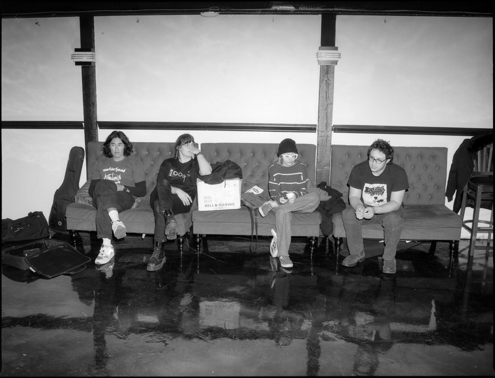

PHOTO BY YOUNG YE
style="text-align:left;">
Boston’s Main Era have steadily chiseled out their sound across a few short years,
developed in no small part by the freewheeling, kaleidoscopic sound of their now-refined live shows •
the band, comprised of Garrett Greaves, Jack Halberian, Maeve Malloy, & Willie Swift, aren’t content
sticking within genre constrictions from track to track, or even within the same song on stage -
instruments are swapped, punk-ish rave-ups are followed by ambient sprawls,
found-sound samples are looped around slinking slowcore punctuated by shoegaze guitar heroics •
nothing much is obvious during one of their live sets, but this much is:
the sights & sounds of a band exuding a gleeful sense of chaotic camaraderie
Thankfully, this feeling of open-world adventure translates well in a studio setting & is all over ‘the bank, a farmer’ -
a primal rhythm section underscores an angular post-punk break,
lyrical references to existentialist literature are bandied about by shuddering arpeggios,
volcanic stabs of fuzz give way to experimental rattle & dread •
although it isn’t clear where Main Era might go from here, old fans & new listeners alike can rest easy
knowing it’s a sonic patchwork well worth following - Candlepin Records